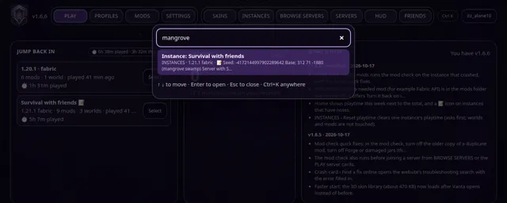

News · · v1.6.7
Vanta 1.6.7: find instances by their notes
Ctrl K now finds your instances by name or by anything in their notes, like a seed or a server IP.
Vanta 1.6.7 is out for Windows and macOS. Press Update in Vanta's top bar to get it.
Ctrl K finds instances
Press Ctrl K (or the Ctrl K button in the top bar) and type part of an instance name, or anything you wrote in its notes: a seed, base coordinates, a friend's server IP. Press Enter and Vanta opens that instance in INSTANCES.

Notes stay on your computer, in the instance folder. Nothing is uploaded.